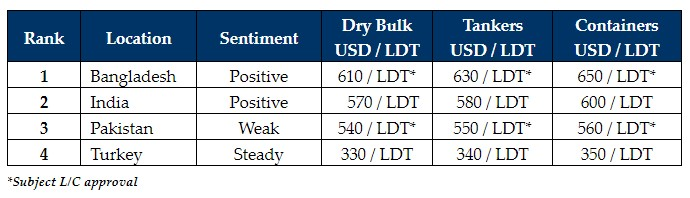

inWeekly Demolition Reports27/03/2023

Sub-continent markets appear to be more tentatively poised this week, with a cooling demand and lower levels thatare increasingly reflective of domestic steel prices and have likely peaked.
Several sales were concluded at impressive numbers over the space of one or (maximum) two weeks before prices started to decline again by about USD 20/LDT, returning to the relative normalities of recent times.
That being said, prices are still trading above USD 600/LDT in Bangladesh and are not too far from that in India, with only Pakistan (and even Turkey) lagging significantly behind and out of the reckoning for another week.
As far as Turkey goes, other than the weekly fluctuation in steel plate prices and the Lira depreciating, not a whole lot has changed with this market that has been deprived of tonnage for a while now.
Overall, the supply of tonnage also seems to have slowed, which is encouraging for Cash Buyers with existing inventories in order to get their desired levels and not distracted by the supposed deluge of tonnage that many ship recyclers have been fearing will greet their shores.
Indeed, container charter rates have picked up from their lows seen earlier this year and so too have dry bulk levels enjoyed a rise in rates, which will see vessels from these two sectors arrive at a slower overall pace over the immediate future.
This will (hopefully) allow both Bangladeshi and Pakistani markets to sort out their chronic L/C financing issues, with it still taking much longer in order to open L/Cs and obtain bank approvals (often if going through state central government banks no approvals are forthcoming at all for the time being).
For week 12 of 2023, GMS demo rankings / pricing for the week are as below.

📄 Download PDF: Ship-recycling-market-insight-week-12-2023-Tentatively-Poised.pdfSource: GMS,Inc. ,https://www.gmsinc.net/gms_new/index.php/web